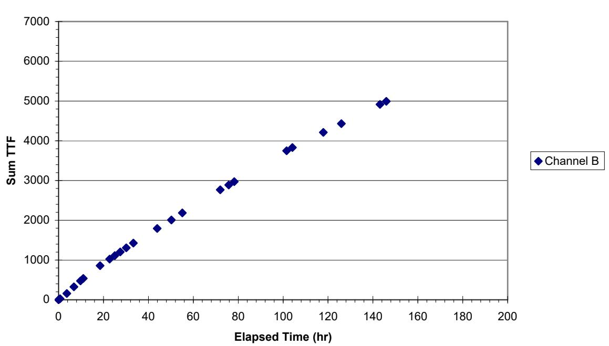
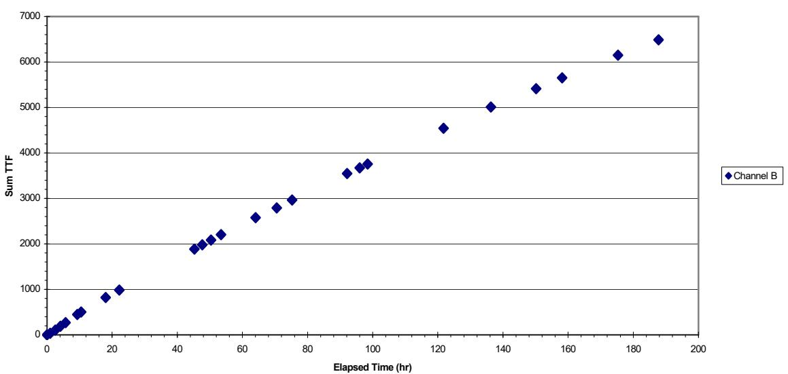
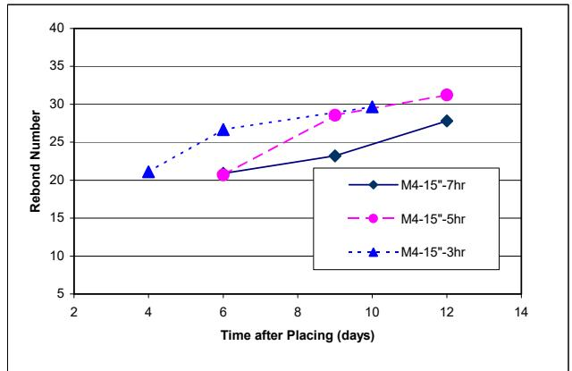
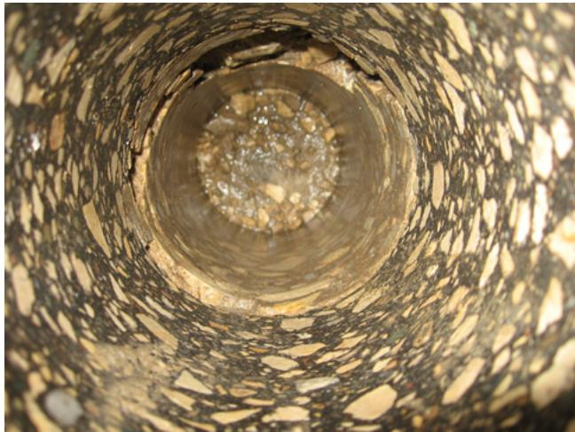
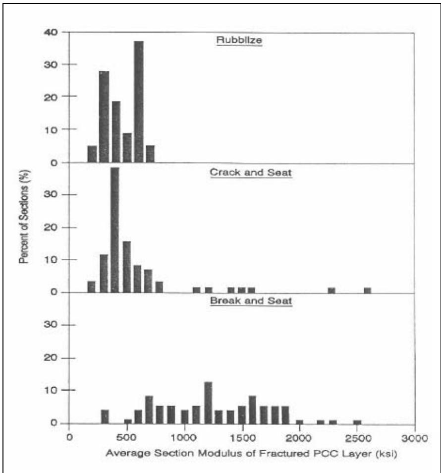
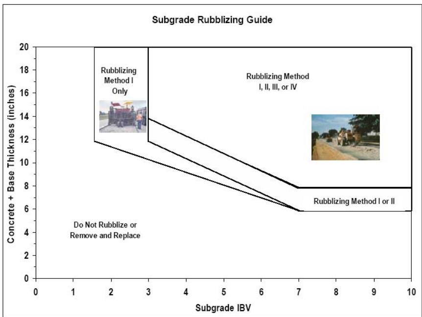
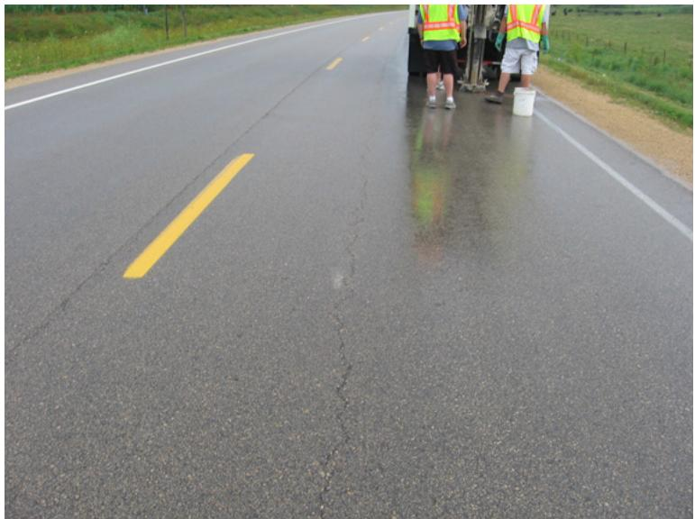

Repair & Recycling
Repair and recycling in pavement engineering encompasses strategies that restore structural performance by reusing existing materials rather than discarding them for complete replacement. These techniques fundamentally aim to mitigate distress mechanisms, such as reflection cracking, by altering the mechanical behavior of deteriorated layers into stable, load-distributing foundations [1]. By transforming rigid or damaged sections into interlocked granular bases or fully replaced structural units, these methods enable the construction of durable flexible or quasi-flexible pavement systems over rehabilitated substructures [1].
CP Tech Center reports covering “Repair & Recycling” also include the following subtopics: Full-Depth Patching and Rubblization.
Repair and Recycling focuses on restoring pavement performance by reusing existing materials rather than discarding them. Full-Depth Patching applies this principle as a targeted repair strategy, completely substituting deteriorated concrete and base layers with new materials to restore structural integrity. Rubblization extends the approach through in-place recycling, fracturing deteriorated concrete slabs into granular base material that is repurposed to support new asphalt overlays, thereby addressing structural distress without complete removal.
Sources (2)
Sub-concepts (2)
Key findings
- Increased patch depth enhanced concrete strength gain through the heat of hydration, enabling earlier traffic opening without compromising load transfer or visual distress metrics [2].
- Maturity testing proved to be a consistent method for determining optimal traffic opening times based on achieved flexural or compressive strength in patch repairs [2].
- Schmidt hammer rebound numbers indicated an optimal early opening window that balanced compression benefits from traffic loads against the risk of damage to fresh patches [2].
- Current patching standards often lacked robust research backing and varied significantly between agencies, highlighting a gap in standardized repair protocols [2].
- The structural design of rubblized pavements was complicated by hybrid behavior that was neither truly rigid nor flexible, requiring specific characterization of the fractured layer’s stiffness [1].
- No consistent elastic modulus value represented rubblized PCC layers across studies, with reported values ranging widely and suggesting site-specific dependency on the rubblization process [1].
- Rubblization was identified as the most effective procedure for addressing reflection cracking in concrete pavements [1].
- Long-term success of rubblized pavements depended heavily on achieving uniform particle size distribution and adequate subgrade support to prevent longitudinal cracking and rutting [1].
Post-Repair Operational Considerations
Evidence: 1 report (1 primary)
Research problem — There is a persistent challenge in balancing rapid traffic reopening with long-term patch durability, as premature loading and environmental exposure historically lead to early failures [2]. Current mitigation strategies often increase costs and delays without standardized research backing, creating a need for reliable methods to determine optimal opening times based on strength gain rather than fixed schedules [2].
The following figure illustrates the maturity curve for Patch 6 in the eastbound lane to demonstrate strength gain over time.

Maturity curve for Patch 6, eastbound lane [2]The figure displays a scatter plot of Sum TTF values increasing linearly with Elapsed Time (hr) for Channel B.
State of the art — The industry is transitioning from fixed curing schedules to performance-based criteria, utilizing maturity methods and early-opening techniques to balance traffic delay with patch durability [2]. Accelerated mixes can achieve opening strengths in as little as 1.5 hours, though the use of admixtures like calcium chloride is often restricted due to potential detrimental impacts on pavement integrity [2]. Current practice involves cross-cutting trade-offs between optimizing mix designs for faster strength gain and managing the increased costs associated with deeper excavations required to leverage heat-of-hydration benefits [2].
The following figure illustrates the maturity curve for Patch 2 in the eastbound lane.

Maturity curve for Patch 2, eastbound lane [2]The figure displays a scatter plot of Sum TTF values increasing over elapsed time in hours. This figure illustrates the application of these performance-based criteria in pavement rehabilitation, where monitoring strength gain allows for accelerated opening times.
Findings from the reports
- Increased patch depth enhanced concrete strength gain through the heat of hydration, allowing thicker sections to achieve target maturity factors faster than thinner ones [2].
- Maturity testing proved reliable for determining optimal traffic opening times based on flexural strength targets, whereas rebound hammer data served as a viable but less sensitive tool for monitoring near-surface strength development [2].
- Load transfer and visual distress surveys showed no significant performance differences across varying mixes, depths, or opening times, indicating that early traffic opening did not compromise these specific performance metrics [2].
- The research noted that current patching standards often lack robust research backing and vary significantly between agencies [2].
Novelty & rigor — Research introduces a maturity-based framework that correlates time-temperature factors with early opening times to balance repair performance against public delay, addressing the shared industry challenge of optimizing traffic reopening windows [2]. The approach uniquely investigates the trade-off between patch depth and strength gain through heat of hydration, establishing specific target time-temperature factors required to achieve opening flexural strength thresholds for mixes with and without accelerators [2]. Methodological rigor is demonstrated by the reproducible use of thermocouples for maturity tracking, falling weight deflectometer load transfer testing, and Schmidt hammer rebound assessments to monitor in-place concrete strength development relative to patch thickness [2].
The following figure illustrates how these maturity-based timing strategies directly influence the in-place concrete strength development measured by rebound numbers.

Effect of opening time on rebound numbers [2]The figure plots the rebound number against the time after placing for concrete patches with different thicknesses and early opening times. Rebound numbers increase over time, indicating that rebound tests characterize strength development of the in-place concrete. This data supports pavement rehabilitation strategies by quantifying how patch thickness and opening time affect the structural performance required for traffic reopening.
Implications — Agencies should adopt maturity testing to determine opening times based on achieved strength rather than relying on fixed curing periods, thereby balancing early strength development with traffic delay reduction [2]. Practitioners must address the lack of standardized methods across jurisdictions and validate nondestructive tools to ensure consistent performance assessment under varying local conditions [2].
Limitations — Patching standards frequently lack robust research backing and vary significantly between agencies, creating a need for standardized methods supported by performance data rather than arbitrary specifications [2]. Accelerated mixes may incur higher costs or require careful management of admixtures to avoid detrimental impacts on pavement durability [2].
Rubblization Process Mechanics and Structural Outcomes
Evidence: 1 report (1 primary)
Rubblization is a rehabilitation technique that fractures an existing concrete slab into small pieces to destroy its rigid slab action, effectively transforming it into a high-strength granular base layer [1]. This process mitigates reflection cracking in subsequent asphalt overlays by eliminating the thermal expansion and contraction stresses of the original concrete slabs [1]. The resulting structure behaves as an interlocked unbound layer with load-distributing characteristics superior to traditional crushed stone bases, allowing for the design of flexible or quasi-flexible pavement systems over the fractured foundation [1].
The multi-head breaker shown in the following figure is a key piece of equipment used to execute this rubblization process.
 Multi-Head Breaker (Antigo Construction, Inc.) [1]
Multi-Head Breaker (Antigo Construction, Inc.) [1]
The image displays a large piece of heavy machinery identified as a Multi-Head Breaker.
Research problem — The research addresses the challenge of establishing accurate structural design inputs for rehabilitated pavements, specifically focusing on how to determine layer moduli and coefficients that reflect actual post-construction conditions rather than theoretical defaults [1]. It seeks to resolve the difficulty in analyzing variable stiffness structures by characterizing rubblized concrete as a high-strength granular base, thereby enabling precise mechanistic-empirical design that prevents load-associated distresses through validated field-derived parameters [1].
The figure below illustrates the contrasting layer conditions found beneath HMA after coring to demonstrate the physical differences between non-rubblized and rubblized PCC layers.

Cross-sectional view of a pavement core showing the condition of the underlying concrete layer. [1]The image displays a vertical cross-section of a borehole revealing distinct pavement layers, including an asphalt surface and a granular base material at the bottom.
State of the art — Rubblization is widely recognized as the most effective method for mitigating reflection cracking, effectively transforming rigid concrete into a high-strength granular base that exhibits structural behavior intermediate between rigid and flexible pavements [1]. Design practices remain inconsistent due to significant variations in layer coefficients and elastic modulus values across jurisdictions, reflecting site-specific dependencies on equipment and particle size distribution rather than standardized material properties [1]. Long-term performance relies heavily on adequate subgrade support, typically requiring a minimum subgrade modulus of 10 ksi to prevent non-load associated distresses, with Falling Weight Deflectometer testing serving as the standard evaluation tool [1]. Recent advancements in structural analysis utilize Artificial Neural Networks trained on synthetic databases to accurately predict critical strain responses and material properties, overcoming the reliability limitations of traditional iterative backcalculation methods [1].
The following figure illustrates the frequency distribution of in-situ PCC modulus values after treatment.

Frequency distribution of in-situ PCC modulus values after treatment [1]The figure displays three histograms comparing the frequency distribution of average section moduli for fractured Portland Cement Concrete (PCC) layers following different rehabilitation treatments. Rubblization results in a narrow, concentrated range of modulus values, whereas crack-and-seat and break-and-seat techniques exhibit substantially more variable moduli with wider distributions extending to higher stiffness values.
Findings from the reports
- Field evaluations found that rubblized pavements exhibited primarily non‑load‑associated distress such as low‑temperature and longitudinal cracking, while surface deflections measured with falling weight deflectometer were comparable to those of conventional HMA overlays on PCC [1].
- The study demonstrated that mechanistic‑empirical design could reliably predict required overlay thicknesses, recommending an average rubblized layer modulus of 78 ksi and a structural layer coefficient of 0.19 for use in AASHTO procedures [1].
- An artificial‑neural‑network tool was created that successfully predicted rubblized layer modulus and key structural responses from FWD measurements, improving upon conventional back‑calculation techniques [1].
- Rubblization was reported as the most effective technique for mitigating reflection cracking in concrete pavements [1].
Novelty & rigor — The research introduces a mechanistic-empirical design framework that replaces inconsistent empirical layer coefficients with site-specific elastic modulus values, enabling more precise determination of minimum overlay thicknesses [1]. A distinctive innovation is the development of an artificial neural network-based backcalculation tool that predicts critical structural responses and layer properties directly from deflection data, overcoming the reliability issues associated with traditional iterative methods dependent on initial seed values [1].
Implications — Designers must specify adequate subgrade strength because the rubblized concrete functions effectively as a high-strength granular base only when supported by a sufficiently robust foundation [1]. Construction practices require strict quality control to ensure uniform particle size distribution, which is essential for maintaining structural integrity and preventing premature distresses in the final overlay [1]. Specifications should account for non-load associated distresses such as low-temperature and longitudinal cracking to mitigate risks that persist despite the technique’s ability to reduce reflection cracking [1].
The following figure illustrates the specific subgrade rubblizing guide developed by the Illinois Department of Transportation.

Illinois DOT Subgrade Rubblizing Guide [1]The figure presents a decision matrix for pavement rehabilitation that correlates subgrade strength with the required thickness of concrete and base layers to determine the appropriate rubblization method. It delineates specific zones where ‘Rubblizing Method I Only’ is indicated, as well as areas permitting Methods I through IV or Methods I and II based on the intersection of subgrade IBV values and structural thickness.
Limitations — Design parameters for rubblized layers lack standardized values, creating significant uncertainty in overlay thickness design due to heavy reliance on variable site-specific factors [1]. Construction quality issues, such as inadequate fracturing or mixture segregation, can compromise performance and lead to premature distress despite the technique’s intent [1]. Non-load-related distresses like low-temperature and longitudinal cracking remain prevalent concerns that are not fully resolved by current understanding of structural behavior [1].
The following figure illustrates one such non-load-related distress, showing longitudinal cracking on an HMA-overlaid rubblized PCC surface.

Longitudinal cracking on HMA-overlaid rubblized PCC pavement. [1]The image displays a paved roadway surface featuring a distinct longitudinal crack running parallel to the yellow centerline, with workers in safety vests visible near equipment at the shoulder.
Related concepts
In this hierarchy
- Parent: Preservation & Rehabilitation
- Child: Full-Depth Patching
- Child: Rubblization
Related by shared evidence
- Falling Weight Deflectometer — shares 2 reports
- Transverse Cracking — shares 2 reports
- Air Entraining Agent — shares 1 report
- Alkali-Silica Reaction — shares 1 report
- Backcalculation — shares 1 report
- Cement Hydration — shares 1 report
- Chemical Admixtures for Concrete — shares 1 report
- Concrete Curing — shares 1 report
Similar topics
- Rubblization
- Full-Depth Patching
- Preservation & Rehabilitation
- Transverse Cracking
- CP Tech Center Reports
- Concrete Overlay
- Concrete Pavement Joint
- Mechanistic-Empirical Pavement Design Guide
References
- H. Ceylan, K. Gopalakrishnan, and S. Kim, "Rehabilitation of Concrete Pavements Utilizing Rubblization and Crack and Seat Methods (Phase II): Performance Evaluation of Rubblized Pavements in Iowa," CTRE, Iowa State University, Ames, IA, Rep. TR-550, 2008. [Online]. Available: https://www.intrans.iastate.edu/wp-content/uploads/2018/10/rubblization_pavements.pdf
- J. K. Cable, K. Wang, S. J. Somsky, and J. Williams, "Portland Cement Concrete Patching Techniques vs. Performance and Traffic Delay," Center for Portland Cement Concrete Pavement Technology, Iowa State University, Ames, IA, 2004. [Online]. Available: https://www.intrans.iastate.edu/wp-content/uploads/2018/08/patching_report.pdf
Feedback on this page